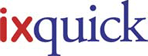

|  |
Sökmotorn Ixquick.com slutar helt registrera IP-adresser
Ixquick går återigen i bräschen med en ”inga data sparas”-policy. Bryssel/New York/Zeist, 28 januari 2009 Integriteten på Internet utsätts för allt fler angrepp allteftersom sökningar och besök på webbplatser rutinmässigt registreras och kombineras i personliga- och beteendeprofiler av de stora sökmotorerna. Tidigare raderade Ixquick den information som kunde kopplas till specifika användare inom 48 timmar. ”På Ixquick anser vi att människor har en fundamental rätt till integritet” säger vd Robert Beens. Påtryckningar från europeiska myndigheter, organisationer som kämpar för att skydda den personliga integriteten samt allmänt ökande medvetenhet har fått de stora sökmotorerna Yahoo, Google och MSN att gå med på att minska tiden de lagrar information till mellan 3 och 18 månader. Men Beens kommer med en varning: ”När det gäller integritet finns problemen i detaljerna. Dessa sökmotorer använder login och cookies med unika ID som automatiskt sparas på din dator när du söker. Båda teknikerna kan ”limma ihop” dina sökningar under mycket längre tid än de officiella tiderna som data sparas. Därför använder Ixquick inte någon av dessa metoder.”
Ixquick skyddar användarnas integritet ytterligare genom att erbjuda en säker anslutning via https-protokollet, vilket förhindrar avlyssning av Ixquicks användare och väntas dessutom lansera en så kallad ”proxy”-tjänst inom de kommande månaderna som gör det möjligt att surfa fullständigt anonymt.
I juli 2008 tilldelades Ixquick den första European Privacy Seal för sina ansträngningar inom detta område. Mer information om European Privacy Seal finns på https://www.european-privacy-seal.eu/ws/EPS-en/Fact-sheet |